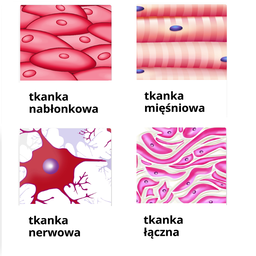

Ogólna budowa organizmu człowieka
Ciało człowieka zbudowane jest z miliardów komórek. Różnorodność funkcji spełnianych przez komórki pociąga za sobą specjalizowanie się ich w pewnych czynnościach i budowie. Komórki o podobnej budowie i wykonujące w organizmie podobne czynności tworzą tkanki.
Organizm człowieka budują cztery główne typy tkanek:
- tkanka nabłonkowa,
- tkanka łączna,
- tkanka mięśniowa,
- tkanka nerwowa.
Zespoły tkanek tworzą narządy mające określone kształty i pełniące określone czynności, np.: oko, serce, język. Każda czynność organizmu człowieka wymaga zgodnej współpracy wielu narządów. Zespoły narządów spełniające określone zadania nazywamy układem narządów, np.: układ pokarmowy złożony między innymi z: zębów, języka, przełyku, żołądka, jelit, itp. Wszystkie układy narządów współpracują ze sobą tworząc złożony organizm.
